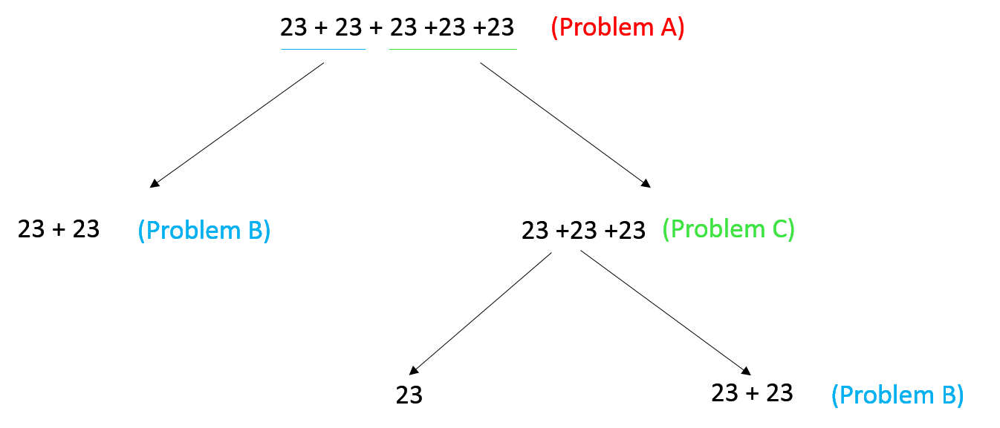
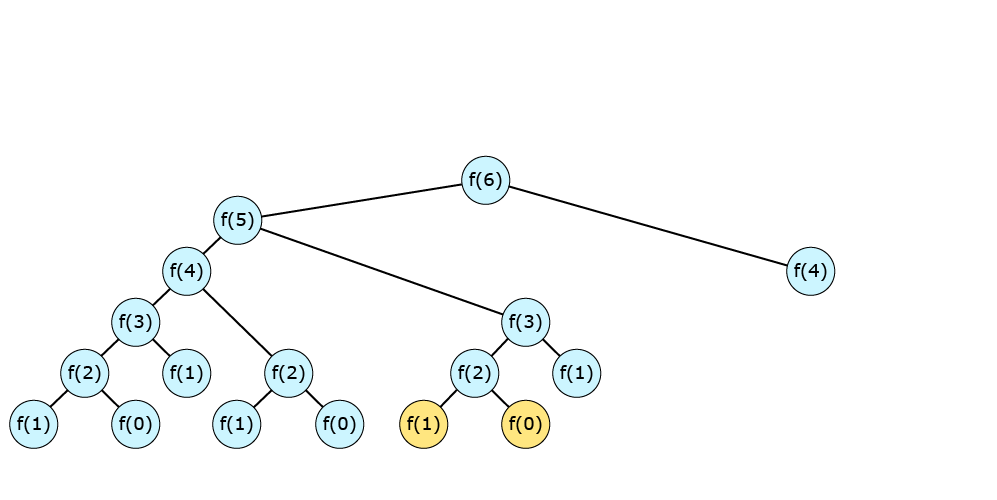
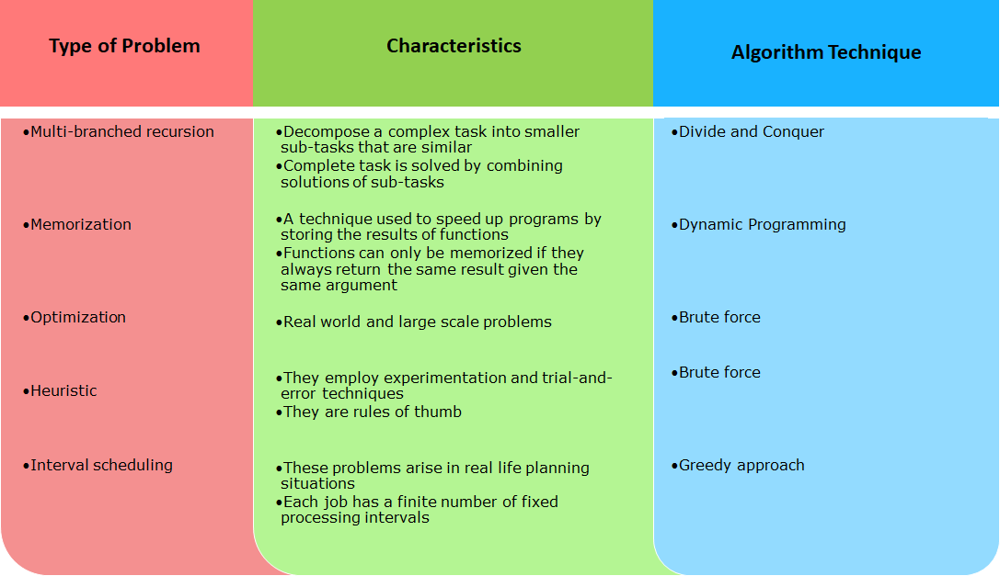

It is very important that we organize our things in a proper way so that we can find them easily.
Data Structures in the real world
This is true for digital data as well. Imagine the amount of data that is present online. How is this data stored and managed?
The data can be stored and managed by using Data Structures.
Data Structures
Data Structures can be defined as a way to store and organize data so that it can be used efficiently. Data structures play a very important role in any software development as they help us to store and retrieve data as fast as possible.
Why do we need Data Structures?
- Large amounts of data is processed by different systems and if this is not stored properly, it will lead to data loss.
- It is easier to search for a particular data if it is organized in a proper format.
- Data Structures help a program to minimize the usage of resources such as memory and space.
There are different types of data structures like list, stack, queue, etc. Each of them are suitable for specific type of tasks.
Data structures can also be categorized as linear and non-linear.
A linear data structure is the one in which elements are arranged in a sequential manner and each element is connected to its previous and next element.
A non-linear data structure is the one in which elements are not arranged in a sequential manner and each element is connected to other elements through multiple paths.

You have already seen and worked with Array. Array is a linear data structure used to store similar type of data. It is very easy to access any member of an array by using index.
Inserting an element in an Array
To insert an element at a specific position, you first need to shift all the elements from that position by one to the right. Consider the array [A, B, C, D, E, F]. Let's say you want to insert 'J' at the third position. First, all the elements from the third position to the last position are shifted. Then, the specific element is inserted at the given position.
Inserting an element in an Array - Tryout
class ArrayTest {
public static void insert(char[] ar, int pos, char val){
//Traversing the array from the last position to the position where the element has to be inserted
for(int i=ar.length-1;i>=pos;i--){
//Moving each element one position to its right
ar[i]=ar[i-1];
}
//Inserting the data at the specified position
ar[pos-1]=val;
}
}
class Tester{
public static void main(String args[]){
char arr[]=new char[6];
arr[0]='A';
arr[1]='B';
arr[2]='C';
arr[3]='D';
arr[4]='E';
//Make changes and try to insert elements at different positions
ArrayTest.insert(arr, 3, 'J');
for(int i=0;i<arr.length;i++)
System.out.println(arr[i]);
}
}
OP:
A
B
J
C
D
E
Deleting an element from an Array
For deleting an element from an array, the elements need to be shifted towards the position from which the element has to be deleted. Consider the array [A, B, C, D, E, F] and let's say you want to delete the element at the third position.
Deleting an element in an Array - Tryout
class ArrayTest {
public static void delete(char[] ar, int pos){
//Traversing the array from the position where the element has to be deleted to the end
for(int i=pos-1;i<ar.length-1;i++){
//Moving each element one position to the left
ar[i]=ar[i+1];
}
//The space that is left at the end is filled with character '0'
ar[ar.length-1]='0';
}
}
class Tester{
public static void main(String args[]){
char arr[]=new char[6];
arr[0]='A';
arr[1]='B';
arr[2]='J';
arr[3]='C';
arr[4]='D';
arr[5]='E';
//Make changes and try to delete elements from different positions
ArrayTest.delete(arr, 3);
for(int i=0;i<arr.length;i++)
System.out.println(arr[i]);
}
}
OP:
A
B
C
D
E
0
Limitations of Array
Array is one of the most widely and frequently used data structure but, it has some limitations. Some of the limitations are:
- An array can contain data of only similar type. Heterogeneous elements cannot be stored in an array.
- Array is of fixed size. Once declared, the size cannot be changed. Let us consider an example of a school which uses an array to store names of all the students in a class. Initially based on the number of students, an array is created and the information is stored. Suppose a student joins late to the class, storing the information of this student now becomes very difficult.
- You have seen the insertion and deletion operations in an array. Those operations are expensive in terms of memory as they require shifting of elements. This shifting may also sometime lead to loss of data if we try to exceed the capacity of the array. Let us take the example of a car having 5 seats. 5 people are seated and another person comes and wants to sit at the second seat. In order to accommodate this person, the person sitting at the second seat shifts to the third seat and so on. At the end, the person who was sitting at the last has no place to sit.
- The elements of an array are stored in continuous memory locations. If the required number of blocks are not present together in the memory, then the array will not be created.
Example
Let us consider that a person named Noah is travelling to Europe for a holiday. He plans to travel to different cities by train. The trip will cover most of the major cities like Milan, Venice, Paris, Amsterdam, etc.
He wants to store the information as to what cities he will be covering and in which order. The duration of the trip is not fixed and also the number of cities that Noah wants to cover are not finalized and may change on the way.
The trip details need to be stored in some data structure. Since the number of cities is not fixed, it is not a good idea to use an array for storing the information.
This kind of information can be stored using another data structure called Linked list. Linked list eliminates the disadvantages of an array that we had discussed previously.
What is a Linked List?
A Linked List is a linear data structure used to store collections of objects. A Linked List is made up of individual nodes which may be present at different memory locations, i.e., they need not be contiguous unlike arrays. These nodes are connected or linked to each other. A node is made up of two parts - one to store the data and a link to connect to the next node.
The first element or node in a linked list is called the head and the last node of the Linked List is called the tail. The link of the tail node always points to null, indicating the end of the linked list.
Noah will be starting his journey from Milan. At the moment, Noah has just planned two other cities - Venice and Munich. Let us see how this can be represented using a linked list.
Creating a Linked List
The Node class
We need to first represent a node. A node can be represented by creating a class. The class can have two attributes
- data - for storing the data
- next - for storing the link to the next node
public class Node {
String data;
Node next;
}
Here, the data to be stored is of type String since city names have to be stored.
The data member variable can be of any primitive type or even objects of any class based on the requirement.
The complete implementation of the Node class is given below:
public class Node {
private String data;
private Node next;
public Node(String data){
this.data=data;
}
public void setData(String data){
this.data = data;
}
public void setNext(Node node){
this.next = node;
}
public String getData(){
return this.data;
}
public Node getNext(){
return this.next;
}
}
Note:- "next" attribute of the Node class will be set to null by the constructor implicitly hence, it’s not explicitly set to null. This can also be done by adding "next=null;" in the constructor of Node class.
The LinkedList class
A linked list can be represented as a set of nodes connected together.
The node referred by head marks the beginning of the list and the node referred by tail, marks the end of the list.
public class LinkedList {
Node head;
Node tail;
}
The complete implementation of LinkedList class is given below:
public class LinkedList {
private Node head;
private Node tail;
public Node getHead(){
return this.head;
}
public Node getTail(){
return this.tail;
}
}
Adding an element to a Linked List
Noah decides that the next city he will go to after Munich is Vienna. He wants to add this to his list. Currently, Munich is the tail node of the list. So, it means that Vienna should be added after Munich and should be made as the tail node.
Adding a node at the end of a linked list is very simple if the tail is known. The new node is simply linked to the tail node and the position of the tail is changed as shown below.
Algorithm
add(data)
1.Create a new node with the given data
2.If the linked list is empty, then make this new node the head and the tail node
3.Else,
a.Make the link of the tail node refer to the new node
b.Make the tail refer to the new node
Adding an element to a linked list - Tryout
class Node {
private String data;
private Node next;
public Node(String data){
this.data=data;
}
public void setData(String data){
this.data = data;
}
public void setNext(Node node){
this.next = node;
}
public String getData(){
return this.data;
}
public Node getNext(){
return this.next;
}
}
class LinkedList {
private Node head;
private Node tail;
public Node getHead(){
return this.head;
}
public Node getTail(){
return this.tail;
}
public void addAtEnd(String data){
//Create a new node
Node node = new Node(data);
//Check if the list is empty,
//if yes, make the node as the head and the tail
if(this.head == null)
this.head=this.tail=node;
else{
//If the list is not empty, add the element at the end
this.tail.setNext(node);
//Make the new node as the tail
this.tail=node;
}
}
}
class Tester{
public static void main(String args[]){
LinkedList list = new LinkedList();
list.addAtEnd("Milan");
list.addAtEnd("Venice");
list.addAtEnd("Munich");
list.addAtEnd("Vienna");
System.out.println("Adding an element to the linked list");
}
}
OP:
Adding an element to the linked list
Adding an element at the beginning
Steps:
- Create a new node with the data passed to the method
- If the linked list is empty, make the new node as the head and the tail node.
- If the linked list is not empty, add the new node at the beginning, i.e., before the current head node and make the new node as the head.
Displaying a Linked List
To display the elements of a linked list from head to tail, you need to traverse the list using a temporary reference and print the data at each point.
Algorithm
display()
1.Take a temp reference and assign it with the head node
2.While temp is not null,
a.Display the data at the temp node
b.Make the next node as temp
Add at begin & display -tryouts
class Node {
private String data;
private Node next;
public Node(String data) {
this.data = data;
}
public void setData(String data) {
this.data = data;
}
public void setNext(Node node) {
this.next = node;
}
public String getData() {
return this.data;
}
public Node getNext() {
return this.next;
}
}
class LinkedList {
private Node head;
private Node tail;
public Node getHead() {
return this.head;
}
public Node getTail() {
return this.tail;
}
public void addAtEnd(String data) {
// Create a new node
Node node = new Node(data);
// Check if the list is empty,
// if yes, make the node as the head and the tail
if (this.head == null)
this.head = this.tail = node;
else {
// If the list is not empty, add the element at the end
this.tail.setNext(node);
// Make the new node as the tail
this.tail = node;
}
}
public void addAtBeginning(String data) {
// Create a new node
Node node = new Node(data);
// Check if the list is empty,
// if yes, make the node as the head and the tail
if (this.head == null)
this.head = this.tail = node;
else {
// If the list is not empty, add the element at the beginning
node.setNext(this.head);
// Make the new node as the head
this.head = node;
}
}
public void display() {
// Initialize temp to the head node
Node temp = this.head;
// Traverse the list and print data of each node
while (temp != null) {
System.out.println(temp.getData());
temp = temp.getNext();
}
}
public static void main(String args[]) {
LinkedList list = new LinkedList();
list.addAtEnd("Milan");
list.addAtEnd("Venice");
list.addAtEnd("Munich");
list.addAtEnd("Vienna");
list.display();
}
}
OP:
Milan
Venice
Munich
Vienna
Searching for an element in a Linked List
Searching in linked list is similar to display operation. To find an element in a linked list, you need to traverse the list using a temporary reference. If the data is found, the respective node is returned.

Algorithm
find(data)
1.Take a temp reference and assign it with head node
2.While temp is not null,
a.If the data at temp is equal to the data being searched for then, return temp
b.Else, make the next node as temp
3.If data is not found then, return null
Inserting an element in a Linked List
Noah's friend Alice who lives in Prague has invited him to her birthday and according to the schedule, Noah will now have to go to Prague before he visits Vienna. Noah needs to change his list and insert Prague after Munich.
To insert an element in a linked list, you first need to find the node after which the new node has to be inserted. The new node should then be placed after the specific node.

Algorithm
insert(data,dataBefore)
1.Create a new node with the given data
3.Find the node with dataBefore. If found then,
a.Call this as the nodeBefore
b.Make the link of the new node refer to the link of nodeBefore
c.Make the link of nodeBefore refer to the new node
d.If link of the new node is null, make it as the tail node
4. If node with dataBefore is not found, display appropriate error message
Deleting an element from a Linked List
Noah's boss just called him and asked him to come back early from his vacation. Noah will now have to change his plan and skip visiting some cities. He decides not to go to Venice and directly travel to Munich from Milan. He wants to make the changes in his list and remove Venice from it.
To delete an element from a linked list, you first need to find the element and then connect the previous node to the next node of the node to be deleted.
Algorithm
delete(data):
1. Find the node with the given data. If found,
a. If the node to be deleted is head node, make the next node as head node
i. If it is also the tail node, make the tail node as null
b. Otherwise,
i. Traverse till the node before the node to be deleted, call it nodeBefore
ii. Make link of nodeBefore refer to link of node to be deleted.
iii. If the node to be deleted is the tail node, call the nodeBefore as tail node
iv. Make the link of the node to be deleted as null
2. If the node to be deleted is not found, display appropriate error message
Tryouts
class Node {
private String data;
private Node next;
public Node(String data) {
this.data = data;
}
public void setData(String data) {
this.data = data;
}
public void setNext(Node node) {
this.next = node;
}
public String getData() {
return this.data;
}
public Node getNext() {
return this.next;
}
}
class LinkedList {
private Node head;
private Node tail;
public Node getHead() {
return this.head;
}
public Node getTail() {
return this.tail;
}
public void addAtEnd(String data) {
// Create a new node
Node node = new Node(data);
// Check if the list is empty,
// if yes, make the node as the head and the tail
if (this.head == null)
this.head = this.tail = node;
else {
// If the list is not empty, add the element at the end
this.tail.setNext(node);
// Make the new node as the tail
this.tail = node;
}
}
public void addAtBeginning(String data) {
// Create a new node
Node node = new Node(data);
// Check if the list is empty,
// if yes, make the node as the head and the tail
if (this.head == null)
this.head = this.tail = node;
else {
// If the list is not empty, add the element at the beginning
node.setNext(this.head);
// Make the new node as the head
this.head = node;
}
}
public void display() {
// Initialize temp to the head node
Node temp = this.head;
// Traverse the list and print data of each node
while (temp != null) {
System.out.println(temp.getData());
temp = temp.getNext();
}
}
public Node find(String data) {
Node temp = this.head;
// Traverse the list and return the node
// if the data of it matches with the searched data
while (temp != null) {
if (temp.getData().equals(data))
return temp;
temp = temp.getNext();
}
return null;
}
public void insert(String data, String dataBefore) {
Node node = new Node(data);
// Check if the list is empty,
// if yes, make the node as the head and the tail
if (this.head == null)
this.head = this.tail = node;
else {
// Find the node after which the data has to be inserted
Node nodeBefore = this.find(dataBefore);
if (nodeBefore != null) {
// Insert the new node after nodeBefore
node.setNext(nodeBefore.getNext());
nodeBefore.setNext(node);
// If nodeBefore is currently the tail node,
// make the new node as the tail node
if (nodeBefore == this.tail)
this.tail = node;
} else
System.out.println("Node not found");
}
}
public void delete(String data) {
// Check if the list is empty,
if (this.head == null)
System.out.println("List is empty");
else {
// Find the node to be deleted
Node node = this.find(data);
// If the node is not found
if (node == null)
System.out.println("Node not found");
// If the node to be deleted is the head node
else if (node == this.head) {
this.head = this.head.getNext();
node.setNext(null);
// If the node to be deleted is also the tail node
if (node == this.tail)
tail = null;
} else {
// Traverse to the node present before the node to be deleted
Node nodeBefore = null;
Node temp = this.head;
while (temp != null) {
if (temp.getNext() == node) {
nodeBefore = temp;
break;
}
temp = temp.getNext();
}
// Remove the node
nodeBefore.setNext(node.getNext());
// If the node to be deleted is the tail node,
// then make the previous node as the tail
if (node == this.tail)
this.tail = nodeBefore;
node.setNext(null);
}
}
}
public static void main(String args[]) {
LinkedList list = new LinkedList();
list.addAtEnd("Milan");
list.addAtEnd("Venice");
list.addAtEnd("Munich");
list.addAtEnd("Prague");
list.addAtEnd("Vienna");
list.display();
System.out.println("--------------------------");
list.delete("Venice");
list.display();
/*
* if(list.find("Munich")!=null) System.out.println("Node found"); else
* System.out.println("Node not found");
*/
}
}
OP:
Milan
Venice
Munich
Prague
Vienna
--------------------------
Milan
Munich
Prague
Vienna
Linked List - Class Diagram
You have seen the different methods of the Node and Linked List classes and their implementation. The complete class diagram for the discussed Node and Linked List classes is given below.
NOTE: Observe the class diagram of Node class, it has a diamond at the bottom because Node has aggregation relationship with itself through the 'next' instance variable.
Array vs Linked List
We may choose between array or linked list for implementing list based on the problem statement. If the problem has frequent insertions and deletions, prefer linked list. Otherwise, if it involves only accessing the elements at random or in sequence with less number of insertions and deletions, use array.
Stack - Scenario
Observe the lunch box below. The boxes are piled up one on top of the other.
In order to access the second box, we need to remove the first box. Similarly, in order to access the third box, we need to remove the second box.
This pile of boxes arranged one on top of the other follows Last-In-First-Out (LIFO) principle which can be represented by a Stack. You can insert the boxes at any time to the stack, but only the most recently added box can be removed or accessed.
Array implementation of Stack
To implement Stack, let's create a class as follows:
class Stack {
private int top;
private int maxSize;
private int[] arr;
Stack(int maxSize) {
this.top = -1;
this.maxSize = maxSize;
arr = new int[maxSize];
}
Let's now understand the various attributes of the Stack class in detail.
Stack operations
- Push: adds an element to the top of the stack
- Pop: removes an element from the top of the stack
- Peek: returns the top most element of the stack
In stack, the elements are added and removed from the top as shown below.
Push operation
Push operation involves addition of an element to the top of the stack. Observe that the top element changes after every push operation.
Let us add the fifth element to the stack. The stack now becomes full and no more element can be added into the stack. So, this means before push operation, it needs to be checked that whether the stack is full or not.
Let us understand the push operation with the help of animation.

Check if stack is full
A stack is full if the top element is one less than maxSize, i.e., when
top = maxSize - 1
Push Algorithm
Check whether the stack is full.
If the stack is full, return false
If the stack is not full,
Increment top by 1
Add the element at top position in the elements array
Return true
Display operation
The algorithm for displaying all the elements of a stack is given below:
Iterate over the stack from top to bottom
Print the element in each iteration
peek()
You will now see how to display only the top element of the stack. Displaying only the top element of the stack is known as the peek operation. The algorithm for displaying the top element of a stack is given below:
peek() returns the top element of the stack. Observe the below example. First, we are checking if the top is less than 0, i.e., stack is empty. If it is not empty, then we are retrieving the top element of the stack.
Check whether the stack is empty.
If the stack is empty, return appropriate error message
If the stack is not empty,
Retrieve the top most element and return it
The algorithm could be represented as shown below. Here, Integer.MIN_VALUE gives the minimum possible value for an integer variable which is used for indicating that the stack is empty.
int peek() {
if (top < 0)
return Integer.MIN_VALUE;
else
return arr[top];
}
Pop operation
Pop operation involves removal of an element from the top of the stack. Observe the elements that are being removed and the top element after every pop operation.
After the last element is removed from the stack, the stack becomes empty.

Let us understand the pop operation with the help of animation.
Check if stack is empty
Removing an element will be performed only after checking whether the stack is empty or not. Let's understand how to check if a Stack is empty or not.
The stack is empty if the top is -1.
Pop Algorithm
Check whether the stack is empty.
If the stack is empty, return appropriate message
If the stack is not empty,
Retrieve data at the top of the stack
Decrement top by 1
Return the retrieved element
Stack - Tryout
class Stack {
private int top; // represents the index position of the top most element in the stack
private int maxSize; // represents the maximum number of elements that can be stored in the stack
private int[] arr;
Stack(int maxSize) {
this.top = -1; // top is -1 when the stack is created
this.maxSize = maxSize;
arr = new int[maxSize];
}
// Checking if the stack is full or not
public boolean isFull() {
if (top >= (maxSize - 1)) {
return true;
}
return false;
}
// Adding a new element to the top of the stack
public boolean push(int data) {
if (isFull()) {
return false;
} else {
arr[++top] = data;
return true;
}
}
// Returning the top most element of the stack
public int peek() {
if (isEmpty())
return Integer.MIN_VALUE;
else
return arr[top];
}
// Displaying all the elements of the stack
public void display() {
if (isEmpty())
System.out.println("Stack is empty!");
else {
System.out.println("Displaying stack elements");
for (int index = top; index >= 0; index--) {
System.out.println(arr[index]); // accessing element at position index
}
}
}
// Checking if the stack is empty or not
public boolean isEmpty() {
if (top < 0) {
return true;
}
return false;
}
// Removing the element from the top of the stack
public int pop() {
if (isEmpty())
return Integer.MIN_VALUE;
else
return arr[top--];
}
}
class Tester {
public static void main(String args[]) {
Stack stack = new Stack(5);
System.out.println("Stack created.\n");
if (stack.push(1))
System.out.println("The element is pushed to the stack!\n");
else
System.out.println("Stack is full!\n");
if (stack.push(2))
System.out.println("The element is pushed to the stack!\n");
else
System.out.println("Stack is full!\n");
if (stack.push(3))
System.out.println("The element is pushed to the stack!\n");
else
System.out.println("Stack is full!\n");
if (stack.push(4))
System.out.println("The element is pushed to the stack!\n");
else
System.out.println("Stack is full!\n");
if (stack.push(5))
System.out.println("The element is pushed to the stack!\n");
else
System.out.println("Stack is full!\n");
stack.display();
if (stack.push(6))
System.out.println("The element is pushed to the stack!\n");
else
System.out.println("Stack is full!\n");
System.out.println("The top element is : " + stack.peek());
int poppedElement = stack.pop();
if (poppedElement == Integer.MIN_VALUE)
System.out.println("Stack is empty\n");
else
System.out.println("The element popped out is : " + poppedElement + "\n");
poppedElement = stack.pop();
if (poppedElement == Integer.MIN_VALUE)
System.out.println("Stack is empty\n");
else
System.out.println("The element popped out is : " + poppedElement + "\n");
poppedElement = stack.pop();
if (poppedElement == Integer.MIN_VALUE)
System.out.println("Stack is empty\n");
else
System.out.println("The element popped out is : " + poppedElement + "\n");
poppedElement = stack.pop();
if (poppedElement == Integer.MIN_VALUE)
System.out.println("Stack is empty\n");
else
System.out.println("The element popped out is : " + poppedElement + "\n");
poppedElement = stack.pop();
if (poppedElement == Integer.MIN_VALUE)
System.out.println("Stack is empty\n");
else
System.out.println("The element popped out is : " + poppedElement + "\n");
poppedElement = stack.pop();
if (poppedElement == Integer.MIN_VALUE)
System.out.println("Stack is empty\n");
else
System.out.println("The element popped out is : " + poppedElement + "\n");
}
}
OP:
Stack created.
The element is pushed to the stack!
The element is pushed to the stack!
The element is pushed to the stack!
The element is pushed to the stack!
The element is pushed to the stack!
Displaying stack elements
5
4
3
2
1
Stack is full!
The top element is : 5
The element popped out is : 5
The element popped out is : 4
The element popped out is : 3
The element popped out is : 2
The element popped out is : 1
Stack is empty
Stack - Class Diagram
The complete class diagram for the discussed Stack class is given below.

Summary of operations in Stack
Stack application areas
- In internet web browsers, the addresses of the recently visited sites are stored in a stack. Every time you visit a new site, the address of that site is pushed to the stack of addresses. With the help of "back" button, the previous site visited is popped out.
- Clipboard in Windows uses two stacks to implement undo-redo (ctrl+z, ctrl+y) operations.
All of us would have waited in front of an ATM waiting to withdraw cash. We all maintain a queue in front of the ATM waiting for our turn to withdraw cash.
an order has to be maintained to enter and exit from the queue. The first person in the queue has to withdraw money, followed by the next person and so on. Those who wish to withdraw money have to join the end of the queue.
This means a queue always follows a First-In-First-Out (FIFO) principle.
So, we need to have a data structure which can implement a queue or the FIFO mechanism. This can be represented by a data structure named Queue.
A Queue is a linear data structure which follows FIFO principle and with which the operations related to FIFO can be performed.
Array implementation of Queue
To implement Queue, let's first represent a queue using a class as shown below.
class Queue {
private int front, rear, maxSize;
private String arr[];
Queue(int maxSize) {
this.front = 0;
this.rear = -1;
this.maxSize = maxSize;
this.arr = new String[this.maxSize];
}
}
Since we need to store the names of the people standing in a queue in front of ATM, a String array has been created in the class as shown above. Let's now understand the various attributes of the Queue class in detail.
Queue operations
- En-queue: adds an element to the end of the queue
- De-queue: removes an element from the front of the queue. The items are removed in the same order as they were added unlike Stack.
In a queue, an element is enqueued at the rear position and dequeued from the front.
Enqueue operation
For keeping the example simple, the assumption is maximum 5 people can be in the queue at any point of time. Initially, a person named Joe comes for withdrawing money. While Joe is withdrawing cash, another person named Jack joins the queue. Observe what happens to the variables front and rear when a new element is being added to the queue.
After Jack, three more people, Eva, Mia and Luke join the queue.
Now, what would happen if another person named Emma wants to join the queue? Can Emma join the queue?
Since our queue is already full, Emma will not be allowed to join the queue. Please note that here the queue has a fixed size since the elements are being stored in an array.
So, this means before enqueue operation, it needs to be checked that whether the queue is full or not.
Let us understand the enqueue operation with the help of animation.
Check if Queue is full
A queue is full if the rear refers to an index position value which is one less than the maximum size, i.e.,
rear = maxSize - 1
Enqueue Algorithm
Check whether the queue is full.
If the queue is full, return false
If the queue is not full,
Increment rear by 1
Add the element at rear position in the elements array
Return true
Display operation
The algorithm for displaying all the elements of a queue is given below
Iterate over the queue from front to rear
Print the element in each iteration
Dequeue operation
Dequeue operation involves deletion of an element from the front of the queue.
Assume, Joe is done with his transaction and moves out of the queue. Next, Jack also completes his transaction and moves out of the queue. In order to remove Joe and Jack from the queue, dequeue operation will be used. Observe the changes done to the front and rear variables when an element is being removed from the queue.
Since the queue is empty, no more dequeue operations are allowed on this queue.
Dequeue operation - Animation
Check if Queue is empty
Removing an element will be performed only after checking whether the queue is empty or not. Let's understand how to check if a Queue is empty or not.
The above diagram shows an empty queue when created. Here, front refers to 0 and rear to -1.
The above diagram shows an empty queue when all the elements are removed. Here, front refers to 5 and rear to 4
A queue is empty if the position of front is greater than position of rear, i.e.,
front > rear
Dequeue Algorithm
Check whether the queue is empty.
If the queue is empty, return appropriate message
If the queue is not empty,
Retrieve data at the front of the queue
Increment front by 1
Return the retrieved element
Queue - Tryout
class Queue {
private int front; // front represents the index position of the first element in the queue
private int rear; // rear represents the index position of the last element in the queue
private int maxSize; // maxSize represent the maximum number of elements that can be stored in the queue
private String arr[];
Queue(int maxSize) {
this.front = 0; // front is 0 when the queue is created
this.rear = -1; // rear is -1 when the queue is created
this.maxSize = maxSize;
this.arr = new String[maxSize];
}
// Checking if the queue is full or not
public boolean isFull() {
if (rear == maxSize - 1) {
return true;
}
return false;
}
// Adding a new element to the rear of queue
public boolean enqueue(String data) {
if (isFull()) {
return false;
} else {
arr[++rear] = data;
return true;
}
}
// Displaying all the elements in the queue
public void display() {
if (isEmpty())
System.out.println("Queue is empty!");
else {
System.out.println("Displaying queue elements");
for (int index = front; index <= rear; index++) {
System.out.println(arr[index]);
}
}
}
// Checking if the queue is empty or not
public boolean isEmpty() {
if (front > rear)
return true;
return false;
}
// Removing an element from the front of queue
public String dequeue() {
if (isEmpty()) {
return "empty";
} else {
String data = arr[this.front];
arr[front++] = null;
return data;
}
}
}
class Tester {
public static void main(String[] args) {
Queue queue = new Queue(5);
System.out.println("Queue created.\n");
if (queue.enqueue("Joe"))
System.out.println("The element is enqueued to the queue!\n");
else
System.out.println("Queue is full!\n");
if (queue.enqueue("Jack"))
System.out.println("The element is enqueued to the queue!\n");
else
System.out.println("Queue is full!\n");
if (queue.enqueue("Eva"))
System.out.println("The element is enqueued to the queue!\n");
else
System.out.println("Queue is full!\n");
if (queue.enqueue("Mia"))
System.out.println("The element is enqueued to the queue!\n");
else
System.out.println("Queue is full!\n");
if (queue.enqueue("Luke"))
System.out.println("The element is enqueued to the queue!\n");
else
System.out.println("Queue is full!\n");
queue.display();
if (queue.enqueue("Emma"))
System.out.println("The element is enqueued to the queue!\n");
else
System.out.println("Queue is full!\n");
String dequeuedElement = queue.dequeue();
if (dequeuedElement == "empty")
System.out.println("Queue is empty\n");
else
System.out.println("The element dequeued is : " + dequeuedElement + "\n");
dequeuedElement = queue.dequeue();
if (dequeuedElement == "empty")
System.out.println("Queue is empty\n");
else
System.out.println("The element dequeued is : " + dequeuedElement + "\n");
dequeuedElement = queue.dequeue();
if (dequeuedElement == "empty")
System.out.println("Queue is empty\n");
else
System.out.println("The element dequeued is : " + dequeuedElement + "\n");
dequeuedElement = queue.dequeue();
if (dequeuedElement == "empty")
System.out.println("Queue is empty\n");
else
System.out.println("The element dequeued is : " + dequeuedElement + "\n");
dequeuedElement = queue.dequeue();
if (dequeuedElement == "empty")
System.out.println("Queue is empty\n");
else
System.out.println("The element dequeued is : " + dequeuedElement + "\n");
dequeuedElement = queue.dequeue();
if (dequeuedElement == "empty")
System.out.println("Queue is empty\n");
else
System.out.println("The element dequeued is : " + dequeuedElement + "\n");
}
}
OP:
Queue created.
The element is enqueued to the queue!
The element is enqueued to the queue!
The element is enqueued to the queue!
The element is enqueued to the queue!
The element is enqueued to the queue!
Displaying queue elements
Joe
Jack
Eva
Mia
Luke
Queue is full!
The element dequeued is : Joe
The element dequeued is : Jack
The element dequeued is : Eva
The element dequeued is : Mia
The element dequeued is : Luke
Queue is empty
Queue Class Diagram
The complete class diagram for the discussed Queue class is given below.
Summary of operations in Queue
Enqueue - After Complete Removal of Element
When a queue is made empty after dequeuing all elements, what happens if you try to enqueue new element?
According to the enqueue algorithm, it will check if the queue is already full or not. As per the isFull() logic, a queue is said to be full if rear is one less than the maxSize.
Thus, an enqueue operation after removal of all the elements will result in a full queue condition, even though it's not.
This is a disadvantage of the logic which we have considered. Dequeue algorithm can be modified to resolve this issue.
The table below lists the operations of a queue:
Queue application areas
- Network Printer
- Shared resource usage (CPU, memory access, etc.)
- Handling calls in call centers
Print Queue in Windows
Print Queue in Windows uses a queue to store all the active and pending print jobs.
When you want to print documents, you issue print commands one after the other. Based on the print commands, the documents get lined up in the print queue.
When the printer is ready, the documents will be sent in first in first out order for printing. The print queue will be populated as shown below:
Comparison of Stack and Queue
In a stack, the most recently added item is removed
In a queue, the first added item is removed.
Java Collections
You have already seen how to implement LinkedList, Stack and Queue in Java. You have seen that as a developer, you need to create the classes with all the functionalities.
You need not do this in case of Java as Java has Collections framework which provides built-in implementations for many data structures, which eases the work of a developer.
Collections Framework
A collection is an object that groups multiple elements into a single unit. Collections are used to store, retrieve and manipulate data.
Collections framework in Java helps us in representing and manipulating collections.
It is a collection of interfaces and classes which helps in storing and processing the data efficiently. Collections Framework standardizes the way we store and access the data from collections and is a part of the java.util package.
The diagram given below represents the hierarchy of the Java Collections framework.
The Collections hierarchy
The following list describes the various interfaces of the collection framework:
- Collection - the root of the collection hierarchy
- A collection represents a group of objects known as its elements.
- Some types of collections allow duplicate elements and others do not. Some are ordered and others are unordered.
- Set - a collection that cannot contain duplicate elements
-
- Lists can contain duplicate elements.
- A programmer can access elements by their index(position) and has control over where each element is inserted in the list.
- Queue and Deque (pronounced as "Deck") - collections used to hold multiple elements
prior to processing
- Besides basic collection operations, a Queue and a Deque provides additional insertion, extraction, and inspection operations.
- Queue
- Queues typically, but do not necessarily, order elements in a FIFO (first-in-first-out) manner. Among the exceptions are priority queues.
- In a FIFO queue, all new elements are inserted at the tail of the queue. Other kinds of queues may use different placement rules.
- Deque
- Deques can be used both as FIFO (first-in-first-out) and LIFO (last-in-first-out).
- In a Deque, elements can be inserted, retrieved and removed from both ends.
Map
Apart from the Collection interface, Java also has an interface that represents a mapping between a key and a value. The Map interface is not a sub-type of the Collection interface and hence, it behaves a bit differently from the other collection types. A Map represents a collection which allows mapping of keys and values to form key-value pairs.
A key is an unique element that acts as an identifier for its value. This allows us to store data in pairs, where each pair is called an entry.
The diagram given below represents the hierarchy of Map.
Benefits of Collections framework
- Ready to use classes and algorithms
- Reduces programming effort
- Increases program speed and quality
- Encourages reusability
Generics
Let us now look at the declaration of the Collection interface.
public interface Collection<E> ... {
}
You can notice <E> in the declaration which you have not used before. The <E> syntax tells you that the interface is generic.
When you declare a Collection instance, you should specify the type of object contained in the collection. Specifying the type allows compiler to verify (at compile-time) the type of object you put into the collection, thus reducing the errors at runtime.
Generics makes the code more stable by making more bugs detectable at compile time.
Generics enable types (classes and interfaces) to be parameters while defining classes, interfaces and methods.
public interface Collection<E> ... {
}
The variable E used in the above declaration is called as type parameter. Like formal parameters used in method declarations, type parameters provide a way for you to re-use the same code with different inputs.
The difference is that the inputs to formal parameters are values, while the inputs to type parameters are types. The actual type that is substituted for the type parameter is called as a type argument.
Collection list = new ArrayList();
list.add("hello");
Code that uses generics has many benefits over non-generic code:
1)Stronger type checks at compile time
A Java compiler applies strong type checking to generic code and gives errors if the code violates type safety. This helps in fixing errors much earlier as they are caught during compile time.
2)Elimination of casts
The following code snippet without generics requires casting:
List list = new ArrayList();
list.add("hello");
String s = (String) list.get(0);
When re-written to use generics, the code does not require casting:
List<String> list = new ArrayList<String>();
list.add("hello");
String s = list.get(0); // no typecast required
3)Enabling programmers to implement generic algorithms
By using generics, programmers can implement a single algorithm for a task that works on collections of different types instead of creating algorithms for each type.
Generic Types
Consider the following Container class.
public class Container {
private Object object;
public void set(Object object) {
this.object = object;
}
public Object get() {
return object;
}
}
This non-generic Container class operates on objects of any type.
Since its methods accept or return an Object, you can pass whatever you want but there is no way to verify at compile time, how the class is being used. Someone may place an Integer in the container and expect to get Integers out of it, while someone else may pass in a String resulting in a runtime error.
Generic version of the Container Class
A generic class is defined with the following format:
class name<T1, T2, ..., Tn> { /* ... */ }
The type parameter section, delimited by angle brackets (<>), follows the class name. It specifies the type parameters (also called type variables) T1, T2, ... and Tn.
Container class can be updated with Generics as follows:
public class Container<T> {
// T stands for "Type"
private T t;
public void set(T t) {
this.t = t;
}
public T get() {
return t;
}
}
As you can see, all occurrences of Objects are replaced by T.
A type variable can be any non-primitive type you specify, any class type, any interface type, any array type or even another type variable. This same technique can be applied to create generic interfaces as well.
Invoking and instantiating a Generic Type
To reference the generic Container class from within your code, you must perform a generic type invocation, which replaces T with some concrete value, such as Integer:
Container<Integer> integerContainer;
Generic type invocation can be considered as being similar to an ordinary method invocation but instead of passing an argument to a method, you are passing a type argument to the Container class itself — Integer in this case.
To instantiate this class, you can use the new keyword as usual, but you need to place <Integer> between the class name and the parenthesis:
Containe<Integer> integerContainer = new Container<Integer>();
In Java SE 7 and later, you can replace the type arguments required to invoke the constructor of a generic class with an empty set of type arguments (<>).
For example, you can create an instance of Container<Integer> with the following statement:
Container<Integer> integerContainer = new Container<>();
Type parameter Naming Conventions
By convention, type parameter names are single, uppercase letters.
The most commonly used type parameter names are:
E - Element (used extensively by the Java Collections Framework)
K - Key
N - Number
T - Type
Generic Methods
In addition to generic types, type parameters can also be used to define generic methods.
Generic methods are methods that introduce their own type parameters.
This is similar to declaring a generic type, but the type parameter's scope is limited to the method where it is declared. You can create static and non-static generic methods and generic constructors.
The syntax for a generic method includes a list of type parameters inside angle brackets which appears before the method's return type.
public static <E> void method() {
}
Generic Types - Tryout
The code given below has a generic type - Container<T>.
class Container<T> {
private T t;
public void set(T t) {
this.t = t;
}
public T get() {
return t;
}
}
class Tester {
public static void main(String[] args) {
Container<Integer> integerContainer = new Container<>();
integerContainer.set(1);
//integerContainer.set("Jeo"); //Uncomment the code and check if String can be passed to the set() method
System.out.println("Inside Integer Container : "+integerContainer.get());
Container<String> stringContainer = new Container<>();
//stringContainer.set(1); //Uncomment the code and check if Integer can be passed to the set() method
stringContainer.set("Jeo");
System.out.println("Inside String Container : "+stringContainer.get());
}
}
OP:
Inside Integer Container : 1
Inside String Container : Jeo
Generic Method - Tryout
The below code is an example of a static generic method which has a type parameter <E>.
class GenericDemo{
//Generic Method
public static <E> void display(E[] arr) {
for (E element : arr) {
System.out.println(element);
}
}
public static void main(String[] args) {
String[] names= { "Luke", "Mia", "Mathew" };
display(names);
System.out.println();
Integer[] numbers = { 1, 2, 3, 4, 5 };
display(numbers);
}
}
OP:
Luke
Mia
Mathew
1
2
3
4
5
Collection Interface
The root of the Collection hierarchy is the java.util.Collection<E> interface.
It specifies the basic operations for manipulating elements in a collection. These operations are inherited and implemented in child interfaces and the classes implementing the interfaces.
Below are some of the important methods provided by the Collection interface:
The toArray() method converts a collection into an array. If you want to convert an array into a list, you can use the Arrays.asList() method.
iterator()
iterator() allows traversing a collection.
Here's an example of how iterator works:
Iterator<String> iterator = orders.iterator(); Â
System.out.println("Elements in the list: ");
while(iterator.hasNext()) {
    System.out.println(iterator.next());
}
The code above sequentially traverses the list in the forward direction.
The code above can also be simplified and written using the for-each loop as shown below:
System.out.println("Elements in the list: ");
for(String order : orders) {
    System.out.println(order);
}
This code has a cleaner syntax and internally uses an iterator. Then why should you explicitly use an iterator?
Modification of a collection inside a for loop throws ConcurrentModificationException. Iterator allows modifying a collection while traversing and hence such an exception can be avoided.
Note: Iterators maintain a cursor to identify the location of elements.
Collections Class
Apart from the Collection interface, Java also has a Collections class.
The java.util.Collections class directly extends the Object class. This class consists of static methods that operate on or return collections.
The methods of this class throw a NullPointerException if the collections or class objects provided to them are null.
Below are some common methods of the Collections class that operate on collections:
ArrayList - Scenario
Let us consider the scenario of ordering food. Let us assume that the food items ordered are stored in an array.
String[] orders = new String[size];
Assume that the size of the array is 4 and you have already placed 4 orders. Now, you want to add the fifth order, i.e., your favorite pizza. Will you be able to add? Since arrays have fixed size, ordering food items after a limit is not possible.
Once an order is processed or cancelled, it needs to be removed from the array. This requires an extra processing code for item removal as discussed earlier in the course. These issues of size limitations and extra processing code for item removal can be overcome by using a collection called ArrayList.
ArrayList class
ArrayList implements the List interface as shown below.

In ArrayList, the elements can be added or removed as and when required. Also, there is no need to maintain any index. The code given below shows how to create an ArrayList object called food for storing strings.
import java.util.ArrayList; // Importing the ArrayList class
import java.util.List; // Importing List Interface
public class ArrayListExample {
public static void main(String[] args) {
List<String> food = new ArrayList<String>(); // Creating a list of String elements
}
}
An object of ArrayList can also be created as follows:
ArrayList<String> food = new ArrayList<String>();
It is considered as a good practice to use interface as reference type because if you declare a collection using an interface type, your code would be more flexible as the implementation can be changed whenever required.
ArrayList Method Description
Add an item
food.add("Noodles"); // Adding the elements
food.add("Burger");
food.add("Pasta");
food.add("Sandwich");
So, the following food items are added to the ArrayList.
Modify an item
food.set(1, "Pizza"); // Modifying the element at a specified index
Check for an element
food.contains("Pasta"); // Checking whether the element is present or not
Remove an item
Let us remove pasta from the ArrayList. Pasta is present at the second index position of the ArrayList. The position of the element to be removed should be specified in the method.
food.remove(2); // Removing the element from the second index position
ArrayList - Tryouts
import java.util.ArrayList; // Importing the ArrayList class
import java.util.List;
class Tester {
public static void main(String[] args) {
List<String> food = new ArrayList<String>(); // Creating a list of String elements
food.add("Pizza"); // Adding elements
food.add("Burger");
food.add("Pasta");
food.add("Sandwich");
System.out.println("Food items: " + food);
}
}
OP:
Food items: [Pizza, Burger, Pasta, Sandwich]
import java.util.ArrayList;
import java.util.List;
class Tester {
public static void main(String[] args) {
List<Integer> numbers = new ArrayList<Integer>(); // Creating an ArrayList object
// Adding the elements to the list
numbers.add(1);
numbers.add(2);
numbers.add(3);
numbers.add(4);
numbers.add(5);
numbers.add(6);
System.out.println("numbers list: " + numbers);
// Adding the number 15 at a particular index (index: 3) in the ArrayList
numbers.add(3, 15);
System.out.println("Observe the index position 3: " + numbers);
// Finding the size of the ArrayList
System.out.println("Size of the ArrayList: " + numbers.size());
// Retrieving the element at a specified index
System.out.println("The number present at the fifth index position is " + numbers.get(5));
// Modifying the element at a specified index (index: 2)
numbers.set(2, 200);
System.out.println("The number at the 2nd index position is changed from 3 to 200");
}
}
OP:
numbers list: [1, 2, 3, 4, 5, 6]
Observe the index position 3: [1, 2, 3, 15, 4, 5, 6]
Size of the ArrayList: 7
The number present at the fifth index position is 5
The number at the 2nd index position is changed from 3 to 200
import java.util.ArrayList;
import java.util.List;
class Tester {
public static void main(String[] args) {
List<String> names = new ArrayList<String>();
names.add("Brian");
names.add("Ross");
names.add("Steve");
names.add("Rachel");
names.add("Steve");
//Checking whether any element is present or not
if (names.isEmpty()) {
System.out.println("No names are present!!");
}
//Displaying the number of names
System.out.println("Number Of names: " + names.size());
//Creating newNames list
List<String> newNames = new ArrayList<String>();
newNames.add("Emily");
newNames.add("Melissa");
// Adding elements of newNames list into names
names.addAll(newNames);
//Displaying all names
System.out.println("The list of names after adding all the names from newNames to names: ");
System.out.println("========================================");
for (String name : names) {
System.out.println(name);
}
System.out.println("========================================");
// Checking whether the name Ross is present or not
if (names.contains("Ross")) {
System.out.println("This name is already present!");
} else {
System.out.println("This name is not present!");
}
//Converting list to array
Object[] namesArray = names.toArray();
// Deleting all the names from the names list
names.clear();
System.out.println("========================================");
System.out.println("Checking whether the names list is empty or not : ");
//Confirming whether all the elements are deleted or not
System.out.println(names.isEmpty());
}
}
OP:
Number Of names: 5
The list of names after adding all the names from newNames to names:
========================================
Brian
Ross
Steve
Rachel
Steve
Emily
Melissa
========================================
This name is already present!
========================================
Checking whether the names list is empty or not :
true
Iterating through ArrayList using for-each - Tryout
import java.util.ArrayList;
import java.util.List;
class Student {
private int studentId;
private String studentName;
private boolean courseRegistered;
public Student(int studentId, String studentName, boolean courseRegistered) {
this.studentId = studentId;
this.studentName = studentName;
this.courseRegistered = courseRegistered;
}
public int getStudentId() {
return studentId;
}
public void setStudentId(int studentId) {
this.studentId = studentId;
}
public String getStudentName() {
return studentName;
}
public void setStudentName(String studentName) {
this.studentName = studentName;
}
public boolean getCourseRegistered() {
return courseRegistered;
}
public void setCourseRegistered(boolean courseRegistered) {
this.courseRegistered = courseRegistered;
}
}
class Tester {
public static void main(String[] args) {
List<Student> students = new ArrayList<Student>();
students.add(new Student(1001, "Steve", true));
students.add(new Student(1002, "Rachel", false));
students.add(new Student(1003, "Monica", true));
students.add(new Student(1004, "David", true));
List<String> studentNames = new ArrayList<String>();
for (Student student : students) {
studentNames.add(student.getStudentName());
System.out.println("Student Id: " + student.getStudentId());
System.out.println("Student Name: " + student.getStudentName());
System.out.println("Course Registered: " + student.getCourseRegistered());
}
System.out.println("===========================================");
System.out.println("Student Names: " + studentNames);
}
}
OP:
Student Id: 1001
Student Name: Steve
Course Registered: true
Student Id: 1002
Student Name: Rachel
Course Registered: false
Student Id: 1003
Student Name: Monica
Course Registered: true
Student Id: 1004
Student Name: David
Course Registered: true
===========================================
Student Names: [Steve, Rachel, Monica, David]
iterator() method
ArrayList Iterator() method
You will now look at the iterator() method in detail. iterator() method is used to iterate through elements in a Collection. It is an implementation of the Iterator interface's iterate() method. hasNext() and next() are important methods that are declared by the Iterator interface.
List interface exclusively provides the ListIterator which allows traversing a list in the reverse direction as well. ListIterator allows traversal in the reverse direction using the hasPrevious() and previous() methods.
In the below example, an ArrayList object named 'numbers' is created. The elements are added to the list using add() method. Then, listIterator() is used to iterate through each element in the list.
import java.util.ArrayList;
import java.util.List;
import java.util.ListIterator;
public class Tester {
public static void main(String[] args) {
List<Integer> numbers = new ArrayList<Integer>();
numbers.add(1);
numbers.add(2);
numbers.add(3);
numbers.add(4);
// Looping ArrayList using listIterator()
ListIterator<Integer> item = numbers.listIterator();
System.out.println("Displaying numbers...");
while (item.hasNext()) {
System.out.println(item.next());
}
System.out.println("Display numbers in the reverse order");
while (item.hasPrevious()) {
System.out.println(item.previous());
}
}
}
ArrayList Iterator() method - Tryout
import java.util.ArrayList;
import java.util.List;
import java.util.ListIterator;
class Student {
private int studentId;
private String studentName;
private boolean courseRegistered;
public Student(int studentId, String studentName, boolean courseRegistered) {
this.studentId = studentId;
this.studentName = studentName;
this.courseRegistered = courseRegistered;
}
public int getStudentId() {
return studentId;
}
public void setStudentId(int studentId) {
this.studentId = studentId;
}
public String getStudentName() {
return studentName;
}
public void setStudentName(String studentName) {
this.studentName = studentName;
}
public boolean isCourseRegistered() {
return courseRegistered;
}
public void setCourseRegistered(boolean courseRegistered) {
this.courseRegistered = courseRegistered;
}
}
class Tester {
public static void main(String[] args) {
List<Student> students = new ArrayList<Student>();
students.add(new Student(1001, "Steve", true));
students.add(new Student(1002, "Rachel", false));
students.add(new Student(1003, "Monica", true));
students.add(new Student(1004, "David", true));
ListIterator<Student> item = students.listIterator();
System.out.println("Student names");
while (item.hasNext()) {
System.out.println(item.next().getStudentName());
}
System.out.println();
System.out.println("Student names in reverse order");
while (item.hasPrevious()) {
System.out.println(item.previous().getStudentName());
}
}
}
OP:
Student names
Steve
Rachel
Monica
David
Student names in reverse order
David
Monica
Rachel
Steve
Java Collections framework also provides LinkedList class which removes the need of creating your own class for implementing a linked list. LinkedList class implements the List interface as shown below.
Methods of LinkedList
A linked list can be created as shown below.
List<String> myList = new LinkedList<String>();
//or
LinkedList<String> myList = new LinkedList<String>();
After a linked list is created, you can use methods for operations on the Linked list. The table below shows some methods of LinkedList.
Methods in LinkedList - Tryout
import java.util.List;
import java.util.LinkedList;
class EuropeTrip {
public static void main(String args[]) {
// Creating a LinkedList
List<String> cities = new LinkedList<String>();
// Adding elements
cities.add("Milan");
cities.add("Venice");
cities.add("Munich");
cities.add("Vienna");
// Displaying elements
System.out.println(cities);
// Inserting elements
cities.add(3, "Prague");
System.out.println(cities);
// Removing elements
cities.remove("Munich");
System.out.println(cities);
// Replacing element
cities.set(2, "Berlin");
System.out.println(cities);
// Displaying size
System.out.println(cities.size());
// Checking if an element is present
System.out.println(cities.contains("Paris"));
// Getting element at specific position
System.out.println(cities.get(0));
// Clearing the elements from the LinkedList
cities.clear();
System.out.println(cities);
// Try to test the other methods of the LinkedList class
}
}
OP:
[Milan, Venice, Munich, Vienna]
[Milan, Venice, Munich, Prague, Vienna]
[Milan, Venice, Prague, Vienna]
[Milan, Venice, Berlin, Vienna]
4
false
Milan
[]
Set Interface - Scenario
Let us assume that the following food items are ordered. Observe that there are repeated entries of few food items.
Now, the task is to find out the unique entries in the list. Instead of manually finding out the duplicate entries, it would be better if there is a collection which can automatically remove duplicate elements.
This can be done by using a collection called Set.

Set Types
Set represents an unordered collection with unique elements. It is present in the java.util package. Just like List, Set also has several implementations.
HashSet
We will first discuss about HashSet class. HashSet uses hash tables for storing the unique elements. There is no guarantee on the iteration order of the set. HashSet depends on the equals() and hashCode() methods for detecting duplicates and null values are allowed.
The code for creating a HashSet object is shown below.
import java.util.HashSet; // Importing the HashSet class
import java.util.Set;
public class Tester {
public static void main(String[] args) {
Set<String> uniqueItems = new HashSet<String>(); // Creating HashSet object
}
}
HashSet - Example
Consider the example given below where duplicate entries have been added to a HashSet but only unique entries are displayed in a random order in the output.
import java.util.HashSet;
import java.util.Set;
public class HashSetExample {
public static void main(String[] args) {
//Creating HashSet object
Set<String> food = new HashSet<String>();
food.add("Pasta"); // Adding elements to the HashSet
food.add("Noodles");
food.add("Sandwich");
food.add("Pasta");
food.add("Burger");
food.add("Noodles");
System.out.print("Set output without the duplicates: ");
System.out.println(food);
}
}
LinkedHashSet
Next, we will discuss about LinkedHashSet. LinkedHashSet uses a combination of hash tables and linked lists for storing elements. Elements are returned in the order of their insertion. LinkedHashSet depends on the equals() and hashCode() methods for detecting duplicates and null values are allowed. The code for creating a LinkedHashSet object is shown below.
import java.util.LinkedHashSet; // Importing the LinkedHashSet class
import java.util.Set;
public class Tester {
public static void main(String[] args) {
Set<String> uniqueItems = new LinkedHashSet<String>(); // Creating LinkedHashSet object
}
}
LinkedHashSet - Example
Consider the example given below where duplicate entries have been added to a LinkedHashSet but only unique entries are displayed in the order of insertion in the output.
import java.util.LinkedHashSet;// Importing the LinkedHashSet class
import java.util.Set;
public class Tester {
public static void main(String[] args) {
Set<String> food = new LinkedHashSet<String>(); // Creating LinkedHashSet object
food.add("Pasta"); // Adding elements to the LinkedHashSet
food.add("Noodles");
food.add("Sandwich");
food.add("Pasta");
food.add("Burger");
food.add("Noodles");
System.out.print("The duplicates are removed and displayed in the order in which the elements are inserted: ");
System.out.println(food);
}
}
TreeSet
Next, we will discuss about TreeSet. TreeSet uses a tree-based data structure for storing elements. Elements are returned based on natural ordering. For example, in case of String, the order will be alphabetical order. TreeSet depends on compareTo() method for ordering as well as for detecting duplicates.
The code for creating a TreeSet object is shown below.
import java.util.TreeSet;
import java.util.Set; // Importing the TreeSet class
public class Tester {
public static void main(String[] args) {
Set<String> uniqueItems = new TreeSet<String>(); // Creating a TreeSet object
}
}
TreeSet - Example
Consider the example given below where duplicate entries have been added to a TreeSet but only unique entries are displayed in their natural order of sorting.
import java.util.TreeSet; // Importing the TreeSet class
import java.util.Set;
public class TreeSetExample {
public static void main(String[] args) {
Set<String> food = new TreeSet<String>(); // Creating TreeSet object
food.add("Pasta"); // Adding elements to the TreeSet
food.add("Noodles");
food.add("Sandwich");
food.add("Pasta");
food.add("Burger");
food.add("Noodles");
System.out.print("Set output without the duplicates in the sorted order: ");
System.out.println(food);
}
}
HashSet - Methods
In this course, we will mainly focus on HashSet in details. Some of the methods of HashSet are given below.
HashSet - Tryyout
import java.util.HashSet;
import java.util.Set;
import java.util.Iterator;
class Tester {
public static void main(String[] args) {
// Creating HashSet
Set<String> food = new HashSet<String>();
// Checking if a HashSet is empty
System.out.println("Is the set empty? : " + food.isEmpty());
// Adding elements to the HashSet
food.add("Pasta");
food.add("Noodles");
food.add("Sandwich");
food.add("Pasta");
food.add("Burger");
food.add("Noodles");
System.out.print("Set output without the duplicates: ");
System.out.println(food);
// Finding the size of the HashSet
System.out.println("The number of food items in the set: " + food.size());
// Checking if the HashSet contains the given element
String foodItem = "Pasta";
if (food.contains(foodItem))
System.out.println(foodItem + " is already ordered");
else
System.out.println(foodItem + " is not ordered");
// Removing an element from the HashSet
if(food.remove("Burger"))
System.out.println("Output after removing Burger from the set:" + food);
// Traversing elements
Iterator<String> item = food.iterator();
while (item.hasNext())
System.out.println(item.next());
// Removing all the elements from the HashSet
food.clear();
System.out.println("After clear() => " + food);
}
}
OP:
Is the set empty? : true
Set output without the duplicates: [Sandwich, Burger, Pasta, Noodles]
The number of food items in the set: 4
Pasta is already ordered
Output after removing Burger from the set:[Sandwich, Pasta, Noodles]
Sandwich
Pasta
Noodles
After clear() => []
HashSet equals() and hashCode() method
While elements are added to a Set, it will check for duplicates and remove them.
In HashSet, as mentioned earlier, equals() and hashCode() methods are used for detecting duplicates.
If two objects are equal based on the equals() method, they will be considered as duplicates.
Classes like Integer, Float, String, etc. have already overridden equals() and hashCode() for checking the values.
When user defined classes are used, equals() and hashCode() needs to be overridden by the developer to compare the objects based on specific attributes. You will now see a tryout for it.
HashSet equals() and HashCode() method - Tryout
There are duplicate entries for emailId. Two users are considered to be same if their emailIds are same. Observe the below code which uses Set to detect and remove the duplicates.
import java.util.Set;
import java.util.HashSet;
import java.util.List;
import java.util.ArrayList;
class User {
private int userId;
private String userName;
private String emailId;
public User(int userId, String userName, String emailId) {
this.userId = userId;
this.userName = userName;
this.emailId = emailId;
}
public int getUserId() {
return userId;
}
public void setUserId(int userId) {
this.userId = userId;
}
public String getUserName() {
return userName;
}
public void setUserName(String userName) {
this.userName = userName;
}
public String getEmailId() {
return emailId;
}
public void setEmailId(String emailId) {
this.emailId = emailId;
}
@Override
public boolean equals(Object user) {
User otherUser = (User) user;
if (this.emailId.equals(otherUser.emailId))
return true;
return false;
}
@Override
public int hashCode() {
return emailId.hashCode();
}
@Override
public String toString() {
return "User Name: "+userName + ", Email Id: " + emailId;
}
}
class Tester {
public static void main(String[] args) {
List<User> userList = new ArrayList<User>();
userList.add(new User(1001, "Mike", "Mike@example.com"));
userList.add(new User(1002, "Ben", "User@example.com"));
userList.add(new User(1003, "Henry", "Henry@example.com"));
userList.add(new User(1004, "Hannah", "User@example.com"));
userList.add(new User(1005, "Ellie", "Henry@example.com"));
userList.add(new User(1006, "Ryan", "Ryan@example.com"));
Set<User> userSet = new HashSet<User>();
userSet.addAll(userList);
for (User user : userSet)
System.out.println(user);
}
}
OP:
User Name: Henry, Email Id: Henry@example.com
User Name: Ben, Email Id: User@example.com
User Name: Mike, Email Id: Mike@example.com
User Name: Ryan, Email Id: Ryan@example.com
Example
Tree House is a book store. The number of books available in the store is huge and it becomes very difficult to locate the books.
The book store wants a way in which the name of a book can be mapped to the shelf number on which the book is placed for easier access.

Here, there is a need to store two values for every element - book name and shelf number.
The collections that you have seen till now allow us to store a single value for a given element but not two values.
In such cases, maps can be used which can be used to store key-value pairs.
What is a HashMap
A map represents a mapping between a key and a value. It is used to store data similar to a dictionary where lookup is performed based on a key and the respective value is returned.
In the case of Tree House book store, the key can be book name and the value can be shelf number as we would search for a book using the book name and try to find the shelf number of it.
In Java, Map is an interface defined as:
public interface Map<K,V>
Here, K stands for the key type and V stands for the value type which can be any reference type
The HashMap class implements the Map interface and can also be used to store key value pairs.
We can create a HashMap in two ways:
HashMap<String, Integer> booksMap = new HashMap<String, Integer>()
Map<String, Integer> booksMap = new HashMap<String, Integer>()
HashMap is known as a HashMap because it uses a technique called hashing which converts a large value to a smaller value which can be used for indexing and easier retrieval of data.
Some of the methods of HashMap class are given below:
Methods in HashMap - Tryout
import java.util.Map;
import java.util.HashMap;
class Tester {
public static void main(String args[]) {
Map<String, Integer> books = new HashMap<String, Integer>();
//Adding key-value pairs to the map
books.put("Data Structures With Java", 50);
books.put("Operating System", 80);
books.put("Let Us C", 70);
books.put("Java Fundamentals", 40);
//Displaying all the key-value pairs present in the map
System.out.println(books);
//Traversing the map
//entrySet() method is used to retrieve all the key value pairs
for(Map.Entry<String, Integer> book:books.entrySet())
System.out.println(book.getKey()+", "+book.getValue());
//keySet() method returns the keys in the Map
for(String name:books.keySet())
System.out.println("key: "+name);
//values() method returns the values in the Map
for(int quantity:books.values())
System.out.println("value: "+quantity);
//Removing element based on key
books.remove("Let Us C");
//Removing element based on value
//Uncomment the code given below, execute and observe the output
//books.remove(70);
//Removing element based on key and value
//Uncomment the code given below, execute and observe the output
//books.remove("Let Us C", 70);
System.out.println(books);
//Replacing key-value pair in the map
books.replace("Operating System", 80, 100);
System.out.println(books);
//Getting a value from the map based on key
System.out.println(books.get("Java Fundamentals"));
//Printing size of the map
System.out.println(books.size());
//Removing all the key-value pairs from the map
books.clear();
//Checking if the map is empty
System.out.println(books.isEmpty());
}
}
OP:
{Operating System=80, Let Us C=70, Java Fundamentals=40, Data Structures With Java=50}
Operating System, 80
Let Us C, 70
Java Fundamentals, 40
Data Structures With Java, 50
key: Operating System
key: Let Us C
key: Java Fundamentals
key: Data Structures With Java
value: 80
value: 70
value: 40
value: 50
{Operating System=80, Java Fundamentals=40, Data Structures With Java=50}
{Operating System=100, Java Fundamentals=40, Data Structures With Java=50}
40
3
true
You have already learnt about Queue and seen its implementation. As mentioned earlier, Java Collections Framework provides some built-in interfaces and classes through which a queue can be implemented. Depending on the interfaces and classes used, there can be different variations of the queue. In this course, the focus will be on the interfaces and class highlighted in the below image.
Queue Interface
Queue is a collection used to hold multiple elements prior to processing.
It is an interface available in java.util package and extends java.util.Collection interface. Just like List, Queue is a collection of ordered elements (or objects) but it performs insertion and removal operations differently.
- Queue represents an ordered list of elements
- Queue supports all methods of Collection interface
- All queues support insertion at the tail of the queue and removal from the head of the queue, except Deque
- Deques are queues but they support element insertion and removal at both ends
Queues typically, but do not necessarily, order elements in a FIFO (first-in-first-out) manner. Among the exceptions are
- Priority queues, which order elements according to a supplied comparator, or the elements' natural ordering
- LIFO queues (or stacks) which order the elements according to LIFO (last-in-first-out)
Queue implementations generally do not allow insertion of null elements, although some of them do not prohibit insertion of null. It is advisable not to insert null into a Queue as null is returned by the poll method when the queue contains no elements.
Queue - Operations
Queue supports all operations supported by Collection interface and also provides additional insertion and extraction operations.
Each of these operations exists in two forms.
- One set of operations throw an exception if the operation fails
- The other set of operations return a special value (either null or false) if the operation fails
Queue - Methods
Queue implementation
There are various interfaces like Deque, BlockingQueue that extend the Queue interface and classes like ArrayDeque, PriorityQueue, ArrayBlockingQueue, etc. which implement the Queue interface. Queue interface can be instantiated as:
Queue<String> queue1 = new ArrayDeque();
Queue<String> queue2 = new PriorityQueue();
Deque interface and ArrayDeque class will be discussed in details in this course.
Deque Interface
Deque is a linear collection that supports element insertion and removal at both ends. This interface extends the Queue interface.
The name deque is short for "double ended queue" and is usually pronounced "deck". It supports capacity restricted deques as well as those with no fixed size limit. Deque can be instantiated as:
Deque<String> deque = new ArrayDeque>();
Unlike the List interface, this interface does not provide support for indexed access to elements.
ArrayDeque Class
ArrayDeque class is the implementation of the Deque interface.
Unlike queue, you can add or delete the elements from both the ends through ArrayDeque. Using this ArrayDeque class, both queue and stack can be implemented.
You will now see the implementation of queue and stack using ArrayDeque class.
Queue using ArrayDeque - Tryout
Deque can be used as a queue to exhibit the FIFO (First-In-First-Out) behavior. Elements are added at the rear of the deque and removed from the front. The code given below contains the implementation of Queue data structure using the class ArrayDeque.
import java.util.Deque;
import java.util.ArrayDeque;
class Tester{
public static void main(String[] args) {
Deque<String> queue = new ArrayDeque<String>(); // no restrictions in capacity
queue.add("Joe");
queue.add("Jack");
queue.add("Eva");
queue.add("Mia");
queue.add("Luke");
System.out.println("People in queue - After addition of 5 people");
for (String str : queue) {
System.out.println(str);
}
queue.remove();
queue.remove();
queue.remove();
System.out.println("\nPeople in queue - After removal of 3 people");
for (String str : queue) {
System.out.println(str);
}
System.out.println();
System.out.println("Head of the queue using element() - "+queue.element());
System.out.println("Head of the queue using peek() - "+queue.peek());
queue.remove();
queue.remove();
// new person added to the empty queue using offer()
queue.offer("Emma");
// newly added person removed using poll()
queue.poll();
System.out.println();
System.out.println("Removing the head of the queue using poll when queue is empty - "+queue.poll()); // returns null since queue is empty
System.out.println("Head of the queue using peek() when queue is empty - "+queue.peek()); // returns null since queue is empty
/* Uncomment the lines of code given below one at a time and observe the output */
//System.out.println("Head of the queue using element() when queue is empty - "+queue.element()); // throws NoSuchElementException since queue is empty
//System.out.println("Removing the head of the queue using remove() when queue is empty");
//queue.remove(); // throws NoSuchElementException since queue is empty
}
}
OP:
People in queue - After addition of 5 people
Joe
Jack
Eva
Mia
Luke
People in queue - After removal of 3 people
Mia
Luke
Head of the queue using element() - Mia
Head of the queue using peek() - Mia
Removing the head of the queue using poll when queue is empty - null
Head of the queue using peek() when queue is empty - null
Stack using ArrayDeque - Tryout
Deques can also be used as a stack to exhibit the LIFO (Last-In-First-Out) behavior. When a deque is used as a stack, elements are pushed and popped from the beginning (top) of the deque. The code given below contains the implementation of Stack data structure using the class ArrayDeque.
import java.util.Deque;
import java.util.ArrayDeque;
class Tester {
public static void main(String[] args) {
Deque<Integer> stack = new ArrayDeque<Integer>(); // no restrictions in capacity
stack.push(1);
stack.push(2);
stack.push(3);
stack.push(4);
stack.push(5);
System.out.println("Numbers in stack - After addition of 5 values");
for (Integer val : stack) {
System.out.println(val);
}
stack.pop();
stack.pop();
stack.pop();
System.out.println("\nNumbers in stack - After removal of 3 values");
for (Integer val : stack) {
System.out.println(val);
}
System.out.println();
System.out.println("Top of the stack using peek() - "+stack.peek());
stack.pop();
stack.pop();
//Uncomment the below code and observe the output
//System.out.println("Trying to remove the element from the top of the stack using pop() when stack is empty - "+stack.pop()); // throws NoSuchElementException since stack is empty
}
}
OP:
Numbers in stack - After addition of 5 values
5
4
3
2
1
Numbers in stack - After removal of 3 values
2
1
Top of the stack using peek() - 2
Scenario
Alison has planned a big surprise for her daughter on her birthday. She decided to bake a cake but, she hasn't done that before and has no idea how to bake a cake.

She remembers that she has a card from a bakery with different ingredients mentioned on it.
She quickly collects all the ingredients and gets ready to bake a cake. She realizes that even though she has all the ingredients, she doesn't know what to do with them.
Without a recipe, Alison will not be able to bake a cake.
In the same way in programming, it is very important to know the procedure or steps for solving any problem. The procedure or set of steps to solve a problem is known as an algorithm.
What is an Algorithm?
Algorithm is a set of well defined instructions to be executed in a certain order to solve a problem. You would know that an algorithm consists of an input, a procedure or set of instructions and an output.
Let us take the case of baking a cake. Here, the input is the ingredients, the process is the set of steps to be followed to bake the cake and the output is the cake. It is very important to follow the steps in the correct order to reach the desired output.
Characteristics of an Algorithm
Introduction
An algorithm can be analyzed to get an estimation of the resources required by that algorithm to solve a particular problem.
Analysis of algorithm mainly deals with the amount of time and the space required to execute the algorithm.
Types of analysis
Let’s first discuss about the time complexity. Generally, we perform the following types of analysis with time complexity:
- Worst case
- Average case
- Best case
Asymptotic Notations
Asymptotic notations are used to represent the growth of an algorithm as the input increases. The algorithm whose growth rate is less with the increase in problem size is considered as the better one. Generally, we use three types of asymptotic notations:
- Big Theta
- Big Oh
- Big Omega
Usually, Big Oh (O) notation is the most used as it helps in knowing the upper bound for an algorithm, i.e., it helps in doing the worst case analysis. In this course also, we will be using the Big Oh notation.
Time Complexity of an Algorithm
Calculating time complexity - Example 1
The running time of an algorithm depends upon many things such as processor, memory, size of the input, etc. To calculate the time complexity of an algorithm, we are only concerned with the rate of growth of time of the algorithm with respect to the input.
In order to calculate the time complexity, we first define a hypothetical model machine that performs all elementary operations in 1 unit time. These elementary operations may involve arithmetic or logical operations, assignment or return statements. Let us assume that all other costs are negligible. To find the time complexity, we assume that the particular method is running on the model machine and add the time taken for all the elementary operations. Let us take a simple example to understand this. The below method calculates the sum of two numbers.
In this case, the total time taken is 2 units. The total amount of time taken for the given method will remain constant irrespective of the input. We can say that this algorithm is a constant time algorithm.
Calculating time complexity - Example 2
The time taken by the given method is directly proportional to the value of n, i.e., the value of the input. We can say that this algorithm is a linear algorithm. Similarly, we can calculate the running time for different kinds of methods.
Representation using asymptotic notations
You have seen how to calculate the running time for algorithms with linear time and constant time. In the same way, you can find out the running time for different kinds of algorithms. For example, if you want to calculate the sum of elements in a 2-D array, the running time will be a quadratic function.
T(n) = an2 + bn + c
When we talk about the time complexity, we talk about very large input and how the time function grows with it. We can say that the time complexity of an algorithm deals with the input size tending to infinity. For n tending to infinity, the value of T(n) will depend on n2 and the other constants and n become insignificant.
To represent this, we make use of asymptotic notations. Here, when we say that the time complexity of this algorithm is O(n2), it means that we are talking about all the functions of quadratic form and how their time function will grow when the input tends to infinity
Examples
1)O(1): The complexity of a program or method is O(1) or constant if it doesn't contain any loop, recursion or call to another method that doesn't have constant complexity.
public void swap(int a, int b){
int temp;
temp=a;
a=b;
b=temp;
}
2)O(n): The complexity of a loop is considered as O(n) or linear. Here, the running time of the loop is directly proportional to n.
public void display(int n){
for(int i=1;i<=n;i++){
System.out.println(i);
}
}
3)O(n^c): The complexity of nested loops is the total number of iterations that will happen. For example, the running time of two nested loops is proportional to the square of n.
public void display(int n){
for(int i=1;i<=n;i++){
for(int j=1;j<=n;j++){
System.out.println(j);
}
}
}
4)O(logn): The time complexity of a method is logarithmic if it multiplies or divides the working area with each iteration.
public void display(int n){
for(int i=1;i<=n;i*=2){
System.out.println(i);
}
}
5)O(nlogn): This complexity is a combination of linear and logarithmic. The running time consists of n loops that are logarithmic.
public void display(int n){
for(int i=1;i<=n;i++){
for(int j=1;j<=n;j*=2){
System.out.println(j);
}
}
}
6)O(loglogn): This complexity occurs when the loop variable is increased or decreased exponentially by a constant amount.
public void display(int n){
for(int i=2;i<=n;i = (int)Math.pow(i, 2.0)){
System.out.println(i);
}
}
Time Complexity Comparison - Tryout
class Tester {
public static double factorial(double n) {
double fact=1;
for(double i=1;i<=n;i++) {
fact=fact*i;
}
return fact;
}
public static void comparingComplexities(double n) {
System.out.println("Values of different complexities for n = "+n);
System.out.println("O(1) = "+1);
System.out.println("O(log(log(n))) = "+Math.log(Math.log(n)));
System.out.println("O(log(n)) = "+Math.log(n));
System.out.println("O(sqrt(n)) = "+Math.sqrt(n));
System.out.println("O(n) = "+n);
System.out.println("O(nlog(n)) = "+n*Math.log(n));
System.out.println("O(n^2) = "+Math.pow(n, 2));
System.out.println("O(n^3) = "+Math.pow(n, 3));
System.out.println("O(2^n) = "+Math.pow(2,n));
System.out.println("O(e^n) = "+Math.exp(n));
System.out.println("O(n!) = "+factorial(n));
}
public static void main(String args[]) {
comparingComplexities(10);
System.out.println("-------------------------------");
comparingComplexities(100);
//Try out with different values of n
}
}
OP:
Values of different complexities for n = 10.0
O(1) = 1
O(log(log(n))) = 0.834032445247956
O(log(n)) = 2.302585092994046
O(sqrt(n)) = 3.1622776601683795
O(n) = 10.0
O(nlog(n)) = 23.02585092994046
O(n^2) = 100.0
O(n^3) = 1000.0
O(2^n) = 1024.0
O(e^n) = 22026.465794806718
O(n!) = 3628800.0
-------------------------------
Values of different complexities for n = 100.0
O(1) = 1
O(log(log(n))) = 1.5271796258079011
O(log(n)) = 4.605170185988092
O(sqrt(n)) = 10.0
O(n) = 100.0
O(nlog(n)) = 460.51701859880916
O(n^2) = 10000.0
O(n^3) = 1000000.0
O(2^n) = 1.2676506002282294E30
O(e^n) = 2.6881171418161356E43
O(n!) = 9.33262154439441E157
Comparing Complexities
Observe the below graph to understand the growth of the running time of various complexities and how they change with change in size of input.
The marks scored by the students are stored in the array called "marks" as shown below:
Robert wants to find the student who has scored full marks, i.e., 50.
In order to find the student, you have to check each element present in the array. Let us start searching from the first element.
Step 1 Check the value of 1st element - marks [0]. The value is 10 and not 50. So, the next element needs to be checked.
Step 2 Check the value of 2nd element - marks [1]. The value is 39 and not 50. So, the next element needs to be checked.
Step 3 Check the value of 3rd element - marks [2]. The value is 45 and not 50. So, the next element needs to be checked.
Step 4 Check the value of 4th element - marks [3]. The value is 47 and not 50. So, the next element needs to be checked.
Step 5 Check the value of 5th element - marks [4]. The value is 50! So, the search operation can be stopped now.
Here, the number of comparisons that has been done is 5 which is also known as the number of passes. Therefore, the number of passes needed for finding the student with full marks is 5.
Linear Search
In order to find the student who has scored full marks in the previous scenario, we have done the comparison starting from 1st element to the element where we have found the full marks, i.e., the 5th element.
This kind of searching technique where each element of the list is searched sequentially is known as Linear Search. The algorithm for Linear Search is shown below.
Input elementToBeSearched, arrayOfElements
for (int index = 0, index < arrayOfElements.length, index++)
if arrayOfElements[index] == elementToBeSearched then
return index
end-if
return -1
Linear Search - Tryout
class Tester {
public static int search(int arrayOfElements[], int elementToBeSearched) {
for (int index = 0; index < arrayOfElements.length; index++) {
// Returning the index of the element if the element is found
if (arrayOfElements[index] == elementToBeSearched)
return index;
}
// Returning -1 if the element is not found
return -1;
}
public static void main(String[] args) {
int[] arrayOfElements = { 10, 39, 45, 47, 50, 15, 23, 32, 25, 49 };
int elementToBeSearched = 50;
int index = search(arrayOfElements, elementToBeSearched);
// Checking whether the element has been found or not
if (index == -1)
System.out.println("Element is not present in the array!");
else
System.out.println("Element is found at index position " + index+"!");
}
}
OP:
Element is found at index position 4!
Time Complexity of Linear Search
Best case: Suppose in the previous scenario if 50 is present as the first element of marks array. marks = {50,39,45,47,40,15,23,32,25,49} In this case, searching for the element will stop with just one comparison which is the best case.
Worst case: Now let us assume that 50 is the last element or not even present in the marks array. marks = {10,39,45,47,40,15,23,32,25,50}; or marks = {10,39,45,47,40,15,23,32,25,28}; In this case, the searching of element will stop after 10 comparisons, i.e., the total number of elements present in the marks array. This is the worst case.
So, if there is an array of size 'n', the number of comparisons required in the worst case will be n. Hence, the worst case time complexity for Linear search is O(n).
Binary Search
There are other search algorithms which can improve the time complexity while searching. One such algorithm is Binary search.
The first step in order to implement binary search is to sort the elements in the array in either ascending order or descending order. Here, let us will sort the marks array in ascending order of marks.
Binary Search - animation

Binary Search - Tryout 1
class Tester {
public static int search(int arrayOfElements[], int elementToBeSearched) {
int low = 0;
int high = arrayOfElements.length - 1;
int mid;
while (low <= high) {
mid = (low + high) / 2;
// Checking if the element to be searched is present in the mid position
if (arrayOfElements[mid] == elementToBeSearched)
return mid;
// If the element to be searched is greater than the element in the mid position, low is updated
if (arrayOfElements[mid] < elementToBeSearched)
low = mid + 1;
// If the element to be searched is lesser than the element in the mid position, high is updated
else
high = mid - 1;
}
// -1 is being returned when the element is not present in the array
return -1;
}
public static void main(String[] args) {
int[] arrayOfElements = { 10, 15, 23, 25, 32, 39, 45, 47, 49, 50 };
int elementToBeSearched = 50;
int index = search(arrayOfElements, elementToBeSearched);
if (index == -1)
System.out.println("Element is not present in the array!");
else
System.out.println("Element is found at index position " + index+"!");
}
}
OP:
Element is found at index position 9!
Another way of implementing binary search algorithm is by using recursion. The code given below implements binary search algorithm using recursion.
class Tester {
public static int search(int arrayOfElements[], int low, int high, int elementToBeSearched) {
if (low <= high) {
int mid = (low + high) / 2;
if (arrayOfElements[mid] == elementToBeSearched)
return mid;
if (arrayOfElements[mid] < elementToBeSearched)
return search(arrayOfElements, mid + 1, high, elementToBeSearched);
return search(arrayOfElements, low, mid - 1, elementToBeSearched);
}
return -1;
}
public static void main(String[] args) {
int[] arrayOfElements = { 10, 15, 23, 25, 32, 39, 45, 47, 49, 50 };
int elementToBeSearched = 50;
int low = 0;
int high = arrayOfElements.length - 1;
int index = search(arrayOfElements, low, high, elementToBeSearched);
if (index == -1)
System.out.println("Element is not present in the array!");
else
System.out.println("Element is found at index position " + index+"!");
}
}
OP:
Element is found at index position 9!
Time Complexity of Binary Search
Let us assume that the length of the array is n.
At each iteration, the array is divided by half.
For the 1st iteration, length of the array = n
For the 2nd iteration, length of the array = n / 2
For the 3rd iteration, length of the array = (n / 2) / 2 = n / 22
.......
.......
Therefore, after kth iteration, length of the array = n / 2k
Also, after kth division, the length of the array becomes 1.
Therefore, length of the array = n/2k = 1, i.e., n = 2k
After applying the log function on both sides,
log2(n) = log2(2k)
log2(n) = klog2(2)
log2(n) = k (as logx(x) = 1)
Hence, the time complexity of binary search is log2(n).
Application areas of Binary Search
Algorithms used in 3D games and applications - space is divided into a tree structure and a binary search is used to retrieve which subdivisions to display according to a 3D position and camera
For solving nonlinear equations with one unknown value
dvantages and Disadvantages of Binary Search
Advantages of binary search algorithm
After each iteration, it divides the array into two halves and considers one half of the array as input for the next iteration. By doing that, it narrows down the search domain. Hence, for larger data sets, it works significantly better than the linear search.
The time complexity of binary search is better compared to linear search.
Disadvantages of binary search algorithm
An array of elements must always be in sorted order to implement the binary search algorithm.
It employs a recursive approach, which requires more stack space.
Linear Search Vs Binary Search
Consider if the words in a dictionary were not sorted in alphabetical order, we would have struggled to find the desired word in the dictionary and no one in this world would have used dictionaries. Dictionaries are easy to use because the words are sorted in alphabetical order.
Also, approximately 25% of all CPU cycles are spent sorting.
One way of sorting the marks could be done by comparing the marks present in two adjacent positions and swapping them if required.
This is one way to sort but each one of you can use different techniques for sorting the marks. These different techniques lead to different algorithms.
There are multiple sorting algorithms.
Bubble Sort
In Bubble Sort, every element is compared with the adjacent element. If required, the elements are swapped. This process is repeated from the start of the array until the given elements are in sorted order. It is called as Bubble sort because elements tend to move up into the correct order like bubbles rising to the surface.
Understanding Bubble sort
In Bubble sort, first marks[0] is compared with marks[1]. If marks[0] > marks[1], then they will be swapped, else the elements will retain their positions.
At the end of pass 1, the element with the largest value will be at the highest index.
Similarly, for Pass 2, we are going to consider the elements at the end of Pass 1 and start the comparison.
Now, the array is sorted, but the algorithm does not know that the array is sorted. So, we need to perform one more pass as the algorithm needs one more pass without any swap to know that the array is sorted.
Bubble sort - Animation

Bubble sort - Animation
class Tester {
static int noOfSwaps = 0;
static int noOfPasses = 0;
public static void swap(int[] numbers, int firstIndex, int secondIndex) {
int temp = numbers[firstIndex];
numbers[firstIndex] = numbers[secondIndex];
numbers[secondIndex] = temp;
noOfSwaps += 1;
}
public static void bubbleSort(int[] numbers) {
int length = numbers.length;
for (int index1 = 0; index1 < (length - 1); index1++) {
boolean swapped = false;
noOfPasses += 1;
for (int index2 = 0; index2 < (length - index1 - 1); index2++) {
if (numbers[index2] > numbers[index2 + 1]) {
swap(numbers, index2, index2 + 1);
swapped = true;
}
}
if (swapped == false)
break;
}
}
public static void main(String[] args) {
int[] numbers = { 48, 40, 35, 49, 33 };
System.out.println("Given array:");
for (int number : numbers) {
System.out.println(number);
}
bubbleSort(numbers);
System.out.println("Sorted array:");
for (int number : numbers) {
System.out.println(number);
}
System.out.println("No. of passes: " + noOfPasses);
System.out.println("No. of swaps: " + noOfSwaps);
}
}
OP:
Given array:
48
40
35
49
33
Sorted array:
33
35
40
48
49
No. of passes: 4
No. of swaps: 7
Limitations of Bubble Sort
Let us consider the marks of 100 students which should be sorted in ascending order. If the lowest marks is present at the last index, think how many comparisons and passes are required for sorting the marks.
Also, the complexity of Bubble sort algorithm is O(n2) which is more compared to the other sorting algorithms that are available.
Merge Sort
We have already discussed that there are other sorting algorithms which are better in terms of complexity compared to Bubble sort algorithm. One such sorting algorithm is Merge sort which sorts faster than Bubble sort!
Merge sort strategy
- Repeatedly divide the unsorted input list into sub-lists such that each sub-list contains only one element
- Repeatedly merge the sub-lists to produce new sorted sub-lists until there is only one sub-list remaining
Merge sort - Example
Assume that an array 'A' contains n number of elements that are not in sorted order. In such cases, first we need to divide the array A into two sub-arrays. The resulting sub-arrays are again recursively split until they are broken into a single element. After the single elements are obtained, we need to start combining them. For this, pick the element which is smaller and insert it into a new array. Continue this, until a single final sorted array is obtained.
In the example we have an array with elements { 48, 98, 76, 9, 20, 24, 30 }. Observe how the elements are sorted using merge sort.
In the example we have an array with elements { 48, 98, 76, 9, 20, 24, 30 }. Observe how the elements are sorted using merge sort.
- In the first step, the array of size 7 is divided into 2 sub-arrays - { 48, 98, 76, 9 } and { 20, 24, 30 }
- The first sub-array having the elements { 48, 98, 76, 9 } is divided further into 2 sub-arrays - { 48, 98 } and { 76, 9 }
- Now, the sub-array containing { 48, 98 } is divided again so that we have single elements - { 48 } and { 98 }. This is repeated for other sub-arrays also until we get single elements.
- Once we have single elements, we should start merging these elements. The two sub-arrays having individual elements are then merged together in sorted order. For, { 48 } and { 98 } we get a new array - { 48, 98 }. Similarly, for { 76 } and { 9 }, after merging these in sorted order, we get { 9, 76 }
- Now we have, { 48, 98 } and { 9, 76 }. These two arrays are merged in sorted order leading to { 9, 48, 76, 98 }
- The above steps 4 and 5 are repeated for other sub-arrays also so that at the end, we get a sorted array.
Merge sort algorithm is so called because it involves repeated merging of left and right sub-arrays to produce the final sorted array.
Algorithm for Merge sort
//Algorithm to repeatedly merge the sub-arrays to produce new sorted sub-arrays
Merge(arr, left, right, leftMerge, rightMerge)
firstIndex = 0
secondIndex = 0
thirdIndex = 0
while firstIndex < leftMerge && secondIndex < rightMerge) do
if left[firstIndex] <= right[secondIndex] then
arr[thirdIndex] = left[firstIndex]
thirdIndex=thirdIndex+1
firstIndex=firstIndex+1
else
arr[thirdIndex] = right[secondIndex]
thirdIndex=thirdIndex+1
secondIndex=secondIndex+1
end-if
end-while
while firstIndex < leftMerge do
arr[thirdIndex] = left[firstIndex]
thirdIndex=thirdIndex+1
firstIndex=firstIndex+1
end-while
while secondIndex < rightMerge do
arr[thirdIndex] = right[secondIndex]
thirdIndex=thirdIndex+1
secondIndex=secondIndex+1
end-while
//Algorithm to repeatedly divide the input unsorted array into sub-arrays
MergeSort(arr,size)
if size < 2 then
return
end-if
mid=size/2
for (index = 0, index < mid; index=index+1)
left[index] = arr[index]
for (index = mid; index < size; index=index+1)
right[index - mid] = arr[index]
MergeSort(left, mid)
MergeSort(right, size - mid)
Merge(arr, left, right, mid, size - mid)
class Tester {
public static void main(String[] args) {
int[] arr = { 19, 8, 16, 26, 45, 76 };
mergeSort(arr, arr.length);
for (int number : arr)
System.out.println(number);
}
public static void mergeSort(int[] arr, int size) {
if (size < 2)
return;
int mid = size / 2; //Dividing the array into two halves
int[] left = new int[mid]; //Creating temporary array to the left of the mid value
int[] right = new int[size - mid]; //Creating temporary array to the right of the mid value
//Copying data to temporary arrays
for (int index = 0; index < mid; index++)
left[index] = arr[index];
for (int index = mid; index < size; index++)
right[index - mid] = arr[index];
//Invoking mergeSort() by passing left array
mergeSort(left, mid);
//Invoking mergeSort() by passing right array
mergeSort(right, size - mid);
//Invoking merge() by passing the arrays returned
merge(arr, left, right, mid, size - mid);
}
public static void merge(int[] arr, int[] left, int[] right, int leftMerge, int rightMerge) {
int firstIndex = 0; //initial index of first sub-array
int secondIndex = 0; //initial index of second sub-array
int thirdIndex = 0; //initial index of merged sub-array
while (firstIndex < leftMerge && secondIndex < rightMerge) {
if (left[firstIndex] <= right[secondIndex])
arr[thirdIndex++] = left[firstIndex++];
else
arr[thirdIndex++] = right[secondIndex++];
}
while (firstIndex < leftMerge)
arr[thirdIndex++] = left[firstIndex++];
while (secondIndex < rightMerge)
arr[thirdIndex++] = right[secondIndex++];
}
}
OP:
8
16
19
26
45
76
Application areas of Merge Sort
Collections.sort() method uses merge sort. This method sorts the unsorted list in the ascending order.
Merge sort can be effectively used for sorting linked lists.
Advantages and Disadvantages of Merge
Advantages
- Merge sort can be used on any type of data sets of any size
- Sorts the large lists quickly compared to bubble sort as it does not go through the entire list many times
- Preferred for linked lists
- The worst case time complexity of Merge sort is O(nlogn) which is less compared to other sorting algorithms.
Disadvantages
Additional memory space is required to store the auxiliary arrays
Comparison between Bubble Sort and M
Introduction to Algorithm Design techniq
A given problem can be solved through various different approaches. Some of these approaches deliver much more efficient results than the others. Algorithm design deals not only with creating a solution for a given problem but also, determining the best technique among various others. The quality of an algorithm can be determined based on several parameters such as user-friendliness, maintainability, time complexity, space complexity and usage of other resources.
Let us take the example of a person who wants to travel from one city to another. There are various ways for travelling from one city to the other.
Out of these different means, the person would choose the most suitable one. For larger distances, a train might be suitable but if there are time constraints then a flight might be more preferable. Buses can also be another option if the trains take more time. Other than that, if the person want to experience a road trip without any time constrains or dependency on other people, a car is the best option.
Similarly, for different situations and conditions, we have different types of algorithm techniques
Brute Force
It is a straightforward approach for solving a problem. It is an exhaustive and trial-and-error technique which evaluates every possible outcome to find a solution.
Advantages and Disadvantages of Brute
Application of Brute Force Technique
Divide and Conquer
This technique involves breaking the problem into smaller parts, solving these smaller problems and then combining them to form the solution of the original problem.
It consists of the following steps:
- Divide the original problem into sub-problems
- Conquer or solve the sub-problems individually
- Combine the solutions to get the solution for the original problem

Advantages and Disadvantages of Divide
Application of Divide and Conquer Technique
Greedy Approach
A greedy algorithm, as the name suggests, always makes the choice that seems to be the best at that moment. This means that it makes a locally optimal choice in the hope that this choice will lead to a globally optimal solution.
Let us understand the Greedy approach with Change making problem.
the denominations of the currencies I have in the wallet,20,10,5,2
The technique we have just used in the change making game is the Greedy approach. Will this approach always give the best solution?
Greedy Algorithm solves problems by making the choice that seems best at a particular moment. This method may or may not give the best output.
Let us understand by revisiting the change-making problem.
the denominations of the currencies I have in the wallet are 15,10,1
By following the greedy approach, we have picked up 6 notes for making a change of 20$.
Instead, we could have made the change with just two 10$ notes. Thus, the greedy approach may not always provide the most optimal solution.
If this approach does not guarantee the most optimal solution always, what is the advantage of using this approach? When should you use this approach?
A greedy algorithm works well if the problem exhibits the following two properties:
Greedy Choice Property: A globally optimal solution can be reached by creating a locally optimal solution. In other words, an optimal solution can be obtained by creating "greedy" choices.
Optimal substructure: Optimal solutions contain optimal sub-solutions. In other words, answers to sub-problems of an optimal solution are optimal.
Real Life Applications of Greedy Approach
Let us see the application of greedy approach with one well-known problem - Traveling salesman problem.
Let us assume that a salesman has to visit 25 cities for selling products. The number of possible routes for 25 cities is 24! = 620448401733239439360000.
So, it is not feasible to pick the best route from 24! available routes. Instead of picking the best route from 24! routes, the salesman can travel by choosing the next closest city from the current city. The salesman can keep doing this until all the cities have been visited. This uses "Greedy approach" for solving the problem.
Even though the above approach may not provide the best solution, Greedy approach is good enough to solve such problems of large magnitude.
Dynamic Programming
Dynamic programming is the most powerful design technique for solving optimization problems.
The approach used in dynamic programming is similar to divide and conquer where the problem is broken down into smaller sub-problems. However, unlike divide and conquer, these sub-problems are not solved independently. Rather, results of these smaller sub-problems are saved and used in the calculation of similar or overlapping sub-problems.
It is mainly an optimization over plain recursion. The idea is to solve and store the results of sub-problems so that we do not have to re-compute similar sub-problems when needed later.
This simple optimization can reduce the time complexities from exponential to polynomial. Let us understand Dynamic programming with a simple example.
Can you answer?
Here are three mathematical expressions. Solve each one using pen and paper and enter the answer in the corresponding box.
The technique
The above technique is an efficient way of solving a complex problem. Let's further explore this technique.
Dynamic Programming - Recursive Approach
Here is a recursive program to compute the nth Fibonacci number.
class Tester {
public static int fibonacci(int num) {
//If passed input is 0, return 0
if (num == 0)
return 0;
//If passed input is 1, return 1
else if(num == 1)
return 1;
else
return fibonacci(num - 1) + fibonacci(num - 2);
}
public static void main(String[] args) {
int num = 5; //40,50,80
System.out.println(num+"th fibaonacci number: "+fibonacci(num));
}
}
OP:
5th fibaonacci number: 5
Why do you think the recursive Fibonacci program is taking a long time to execute for larger values of num?
Let’s understand through an animation why the recursive program takes so long for larger values of num.
Do you think we need to recompute f(0) or f(1) or f(n) if we have already computed once? No, we should not be recomputing it.
Let’s see a solution without recomputation using Dynamic programming.
Dynamic Programming - Recursive Technique - No recomputation !
Here we observe that instead of re-computing the fibonacci of a number multiple times, we can store it in a list and use its value whenever required. This small change will result in executing the program much faster.
The code given below computes the nth Fibonacci number using dynamic approach.
class Tester {
public static int fibonacci(int num) {
//Declare an array to store Fibonacci numbers
int f[] = new int[num + 1];
int index;
//0th and 1st number of the series are 0 and 1
f[0] = 0;
if (num > 0) {
f[1] = 1;
for (index = 2; index <= num; index++) {
//Add the previous 2 numbers in the series and store the sum
f[index] = f[index - 1] + f[index - 2];
}
}
return f[num];
}
public static void main(String[] args) {
int num = 9;
System.out.println(num+"th fibonacci number : "+fibonacci(num));
}
}
OP:
9th fibonacci number : 34
Choosing the Best Approach for a Problem
Before choosing the best algorithm design strategies for a problem, there is a need to know the characteristics of that problem. Based on the characteristics, the best approach can be decided.
Comparing Algorithms
Let us take a look at the comparison of the various searching and sorting algorithms that you have seen.
Comparing Data Structures
Let us take a look at the comparison of the various operations that are performed on data structures.
In this course, you have learnt
- the need for Data Structures
- implementation of
- Array
- Linked list
- Stack
- Queue
- usage of Generics and the following classes or interfaces of Java Collections
Framework
- ArrayList
- LinkedList
- Set interface
- HashMap
- Queue interface
- Deque interface
- ArrayDeque class
- analysis of algorithms
- searching algorithms
- Linear search
- Binary search
-
sorting algorithms
- Bubble Sort
- Merge Sort
- various algorithm techniques like
- Brute force
- Divide and conquer
- Greedy approach
- Dynamic programming